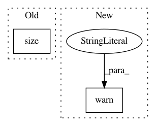

b7be03229cc3798de8493f0b7f9b271e6be317a2,gpytorch/models/additive_grid_inducing_variational_gp.py,AdditiveGridInducingVariationalGP,__init__,#AdditiveGridInducingVariationalGP#Any#Any#Any#Any#Any#,11
Before Change
variational_mean = self.variational_mean
chol_variational_covar = self.chol_variational_covar
variational_mean.data.resize_(*([num_dim] + list(variational_mean.size())))
chol_variational_covar.data.resize_(*([num_dim] + list(chol_variational_covar.size())))
// Mixing parameters
if mixing_params:
After Change
class AdditiveGridInducingVariationalGP(AbstractVariationalGP):
def __init__(self, grid_size, grid_bounds, num_dim, mixing_params=False, sum_output=True):
warnings.warn(
"AdditiveGridInducingVariationalGP is deprecated in favor of a new variational inference interface, "
"and will be removed in a future release. Please see the new examples.",
DeprecationWarning,
)
variational_distribution = VariationalDistribution(num_inducing_points=grid_size, batch_size=num_dim)
variational_strategy = AdditiveGridInterpolationVariationalStrategy(
self,
grid_size=grid_size,
In pattern: SUPERPATTERN
Frequency: 3
Non-data size: 2
Instances
Project Name: cornellius-gp/gpytorch
Commit Name: b7be03229cc3798de8493f0b7f9b271e6be317a2
Time: 2018-10-28
Author: gardner.jake@gmail.com
File Name: gpytorch/models/additive_grid_inducing_variational_gp.py
Class Name: AdditiveGridInducingVariationalGP
Method Name: __init__
Project Name: cornellius-gp/gpytorch
Commit Name: e5a3f2208cc837f75ef312b4bd8b87ea59827bdc
Time: 2018-02-27
Author: gpleiss@gmail.com
File Name: gpytorch/models/abstract_variational_gp.py
Class Name: AbstractVariationalGP
Method Name: marginal_log_likelihood
Project Name: cornellius-gp/gpytorch
Commit Name: 1d3a54e34c9577e677744d2196bb73254c0cdeec
Time: 2018-02-27
Author: gpleiss@gmail.com
File Name: gpytorch/models/exact_gp.py
Class Name: ExactGP
Method Name: marginal_log_likelihood